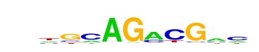

| p-value: | 1e-59 |
| log p-value: | -1.362e+02 |
| Information Content per bp: | 1.659 |
| Number of Target Sequences with motif | 94.0 |
| Percentage of Target Sequences with motif | 5.69% |
| Number of Background Sequences with motif | 262.7 |
| Percentage of Background Sequences with motif | 0.58% |
| Average Position of motif in Targets | 46.3 +/- 16.0bp |
| Average Position of motif in Background | 51.5 +/- 32.1bp |
| Strand Bias (log2 ratio + to - strand density) | 10.0 |
| Multiplicity (# of sites on avg that occur together) | 1.01 |
| Motif File: | file (matrix) reverse opposite |
| Rank | Match Score | Redundant Motif | P-value | log P-value | % of Targets | % of Background | Motif file |
| 1 | 0.955 | 1e-55 | -127.639887 | 6.66% | 0.93% | motif file (matrix) | |
| 2 | 0.924 | 1e-50 | -115.977895 | 5.21% | 0.59% | motif file (matrix) | |
| 3 | 0.947 | 1e-45 | -104.634525 | 4.00% | 0.35% | motif file (matrix) | |
| 4 | 0.944 | 1e-41 | -96.369039 | 4.78% | 0.63% | motif file (matrix) | |
| 5 | 0.950 | 1e-38 | -87.726336 | 5.33% | 0.90% | motif file (matrix) | |
| 6 | 0.837 | 1e-27 | -63.418416 | 7.75% | 2.50% | motif file (matrix) | |
| 7 | 0.837 | 1e-26 | -59.987648 | 8.18% | 2.84% | motif file (matrix) | |
| 8 | 0.815 | 1e-22 | -51.853758 | 2.00% | 0.18% | motif file (matrix) | |
| 9 | 0.926 |  | 1e-19 | -44.853386 | 2.00% | 0.23% | motif file (matrix) |